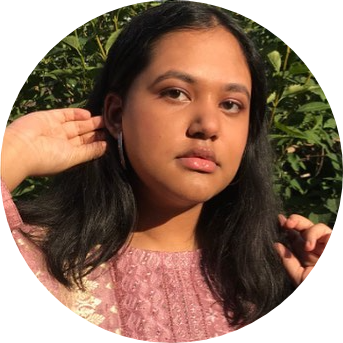
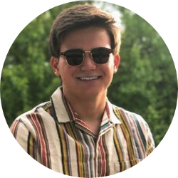
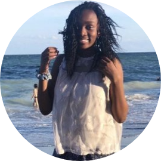
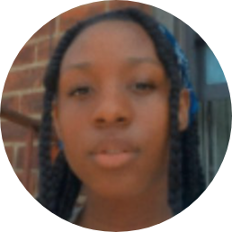

Meet the Team!
Click on the photos for more information!
Name
Title
A brief description.
-
Founder
Zara Rahman is an award-winning spoken word artist, and the founder of Youth professionals. With experience and passion for social justice, and community empowerment, she hopes to create an engaging platform for all. In the future, Zara plans to become a human rights attorney and grow Youth Professionals.
Contact:
Instagram: @hereszara -
Logistics Executive
Cole is a senior in high school from Kansas City, Missouri. As a member of the LGBTQ+ community, Cole understands the barriers impeding certain groups from success. He hopes to help break down these barriers to assist LGBTQ+ and BIPOC individuals find success. Cole enjoys debate, tennis,and working with nonprofits.
Contact:
Instagram @coleharms -
Logistics Executive
Tola is 15 and a sophomore from North Carolina. She recently discovered her passion for cooking & baking, in March, when her state was put in quarantine. Tola loves to write in her free time and politics is her favorite thing to engage in. Specifically, debate. Tola’s dream job is to be a lawyer.
Contact:
Instagram: @xoxo.tola -
Administrative Executive
Saige is a high school senior from NYC and majoring in Biological Sciences. She is passionate about teaching, social justice, and neuroscience. In her free time, she likes to write, cook, bake, paint, and embroider. She also plays the violin, piano, and cello and has a pet turtle.
Contact:
Instagram: @_saigec_ -
Public Relations Executive
Jiayi joined Youth Professionals to help BIPOC and LGBTQ+ youth achieve their academic and career goals. Some things she enjoys are volunteering/getting involved in the community, music, and art.
Contact:
Instagram: @jiayi.deng_ -
Outreach Executive
Sukh is a grade 11 student studying in the IB Program. Sukh advocates for change and steps up against injustices in her community. Her interests lie within Politics, Law, and Astronomy. In school, she is the Treasurer on Student Government, Media and Marketing Executive on Student Leaders, and a Junior on the Debate Team.
Contact:
Instagram: @sukhthukral -
Web Development Executive

Jaedon Visva is a grade 9 student in Toronto, Ontario. He enjoys helping people solve problems through code. He joined Youth Professionals to help develop their website, and is hoping to become a software engineer in his future.
Contact:
Instagram: @jaedonvisva